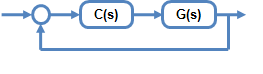
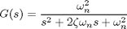
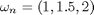
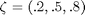
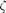
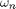
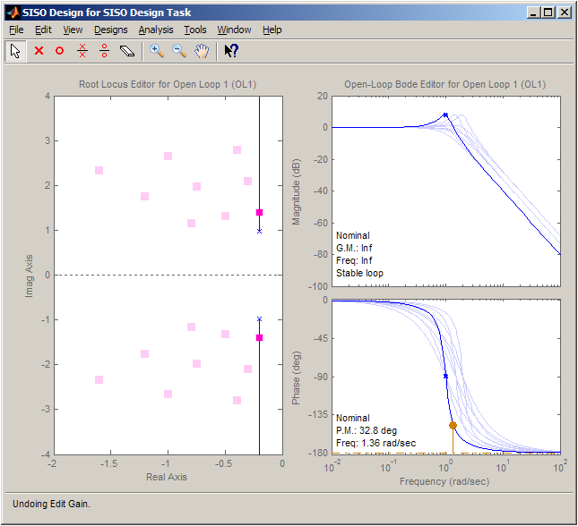
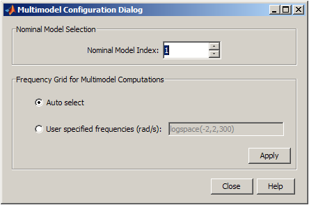
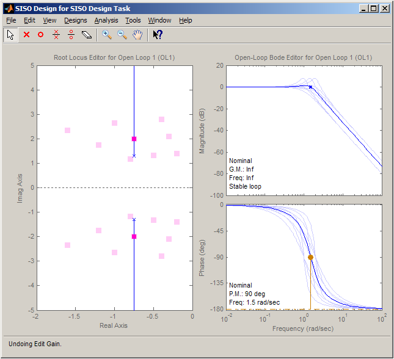

プラント モデル セットのための補償器の設計
このデモでは、複数のプラント モデルに対して使用できる、SISO 設計ツールのさまざまな解析ツールと設計ツールについて説明します。
目次
プラント モデル セットの取得
次の図のように、ある性能目的を達成するように C が設計されている典型的なフィードバック問題を検討してください。

通常、システムのダイナミクス G は正確に知られておらず、また操作条件によって変化します。以下に例を示します。
1. システムのダイナミクスのばらつきは、通常は標準値 (5Ω +/-1% 抵抗器の抵抗値など) の範囲と定義される、製造上の公差が原因となる場合があります。
2. システムのダイナミクスは、操作条件によっても異なります (たとえば、航空機力学は高度と速度に基づいて変わります)。
このようなタイプのシステムのためにコントローラーの設計を行う際は、システム ダイナミクスのあらゆるばらつきに対する性能目的を達成することが必要です。SISO 設計ツールを使用すれば、LTI 配列と定義したモデル セットのためのコントローラーの設計を解析できます。
この LTI モデルの配列は、以下から取得できます。
Control System Toolbox™
Simulink® Control Design™
Robust Control Toolbox™
System Identification Toolbox™
この例は、プラント集合のための補償器の設計に使用できるツールを示します。
SISO 設計ツールにおけるマルチモデル システムの使用
この例では、プラント モデルは以下のように定義された 2 次システムです。

(
 および )
LTI 配列の作成
まず、 と  を組み合わせて、LTI 配列を作成します。
wn = [1,1.5,2]; zeta = [.2,.5,.8]; ct = 1; for ct1 = 1:length(wn) for ct2 = 1:length(zeta) zetai = zeta(ct2); wni = wn(ct1); G(1,1,ct) = tf(wni^2,[1,2*zetai*wni,wni^2]); ct = ct+1; end end size(G)
9x1 array of transfer functions. Each model has 1 outputs and 1 inputs.
次に、SISO 設計ツールを起動します。
>> sisotool(G)
ボード開ループ エディターと根軌跡開ループ エディターの両方がある SISO 設計ツールが開きます。

設計に使用する名義モデルは、プラント集合の最初の要素です。根軌跡エディターにより、プラント集合に関連付けられた閉ループ極の位置と名義モデルについての根軌跡が表示されます。また、ボード エディターにより、名義モデル応答とプラント集合応答の両方が表示されます。これらのエディターでは、プラント集合への効果の可視化を同時に行いながら、補償器のゲイン、極、および零点を対話形式で調整できます。
名義モデルの変更
既定により、名義モデルは、プラント集合の最初の要素です。名義モデルを変更するには、[SISO 設計作業] の [アーキテクチャ] タブで、[マルチモデルの設定] ボタンをクリックします。[マルチモデルの設定] ダイアログにより、名義モデルを変更できます。

たとえば、名義モデルに 5 を選択すると、可視化が次のように変更されます。

プラント集合の可視化の設定
マルチモデル可視化の設定は、プロットのメニューを右クリックすることによってアクセスできます。マルチモデル可視化は、以下に示すように、オフにすることも、個々の応答として、または個々の応答をカプセル化する境界領域として表示することもできます。

まとめ
SISO 設計ツールには、マルチモデル システム向けの設計ツールと解析ツールが用意されています。このツールにより、システム全体の性能と安定性を同時に解析できます。